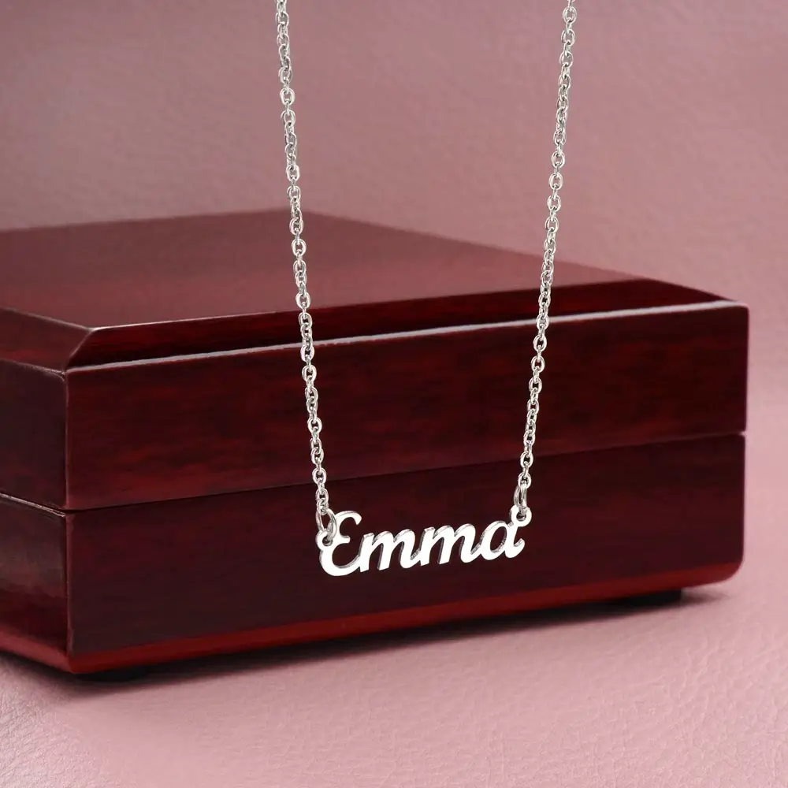

The best thing to engrave on a necklace for your girlfriend is something short that only the two of you would write: a word like “Always,” “My person,” the date you met, or the coordinates of your first date. On a small pendant, keep it to three to five words or fewer. If you are unsure, one word or one date is almost never wrong.
Below are ideas by style, a date and Morse code converter, a table of how much fits on each necklace type, and the mistakes that are hard to undo once metal is cut.
Top 10 Picks
- My person
- Always
- Still falling for you
- My favorite hello
- I’d choose you every time
- Yours always
- The date you met, in Roman numerals (XII.VI.MMXXIV)
- Your initials: J + M
- Home
- Mine
Quick Picks by Her Style
One word | Romantic | Dates | Coordinates | Morse code | By occasion | What fits | FAQ
| If she is… | Try engraving |
|---|---|
| Minimal and quiet | One word (“Always”) or her initials |
| A big romantic | “I’d choose you every time” |
| Funny | An inside joke, or a movie line you both quote |
| Sentimental | The date you met, in Roman numerals |
| Adventurous | Coordinates of your first date or a favorite trip |
| Private | Morse code, or a line on the back only she sees |
One-Word Ideas
One word is the easiest to read, fits almost any pendant, and never feels too much. It is the safest start for a new relationship.
- Always
- Mine
- Yours
- Forever (later in a relationship)
- Home
- Sunshine
- Believe
- Enough
- Cherished
- Hers
Short and Sweet Phrases
- My person
- Always & forever
- You have my heart
- My favorite hello
- Still falling for you
- You’re my sunshine
- Soul mate
- Here with you
Romantic and Sentimental
Longer lines suit a bar, a large disc or the back of a pendant.
- I’d choose you every time
- To the moon and back
- You are my today and all of my tomorrows
- Wherever you are is home
- I found you, and I’m keeping you
- Every day with you is a blessing
More that fit a bar or disc:
- Chosen, every day
- Still choosing you
- Safe with you
- Better with you
- My quiet place
- My favorite person
- Yours since XII.VI.MMXXIV
- Two cities, one heart (long distance)
Funny and Inside Jokes
An inside joke is the most personal engraving there is. Test it with one question: will it still make you both smile in five years? If the joke is tied to one week, put it on the card instead.
- Stuck with me
- Plot twist: I love you
- Best decision I ever made
- Worth the wait
- Not a phase
- Still your favorite
Movie and Show Lines
A short line from something you both love says “I know you.” Keep it to a few words:
- “I found my lobster” (Friends)
- “As you wish” (The Princess Bride)
- “I love you” and “I know” (Star Wars), one on each of two matching pieces
- “You’re my person” (Grey’s Anatomy)
Dates and Roman Numerals
A date is private in public: anyone can see it, only you know what it means. Good dates are the day you met, your first date, your first kiss, or the day you became a couple. Roman numerals make it look like a design, not a diary.
Check the order before you order. “06.12.2024” means June 12 in the US and 6 December in most other countries. Roman numerals fix this: write the month in Roman numerals too, and decide the order once.
Date to Roman numerals
Coordinates of a Special Place
Coordinates mark where it happened: your first date, where you met, where you got engaged, a trip you took together. They look like 48.8584° N, 2.2945° E.
- Find them: in Google Maps, right-click the spot on a computer, or press and hold on the map on a phone. The numbers appear at the top of the menu.
- Keep four decimal places. That is accurate to roughly a house, and it keeps the line short.
- Check N/S and E/W. A wrong letter puts you in a different hemisphere.
Initials, Nicknames and Names
- Initials joined: “J + M” or “J & M.” Your two initials are a safe choice at almost any stage.
- A private nickname: the one only you use. It is the most personal word on this page.
- Her name in script: a name works as the whole design. See our Custom Name Necklace, which is the name pendant itself rather than engraved text.

In Another Language
A phrase in another language reads as a secret to everyone but you two. Only use one if you are sure of the spelling, and ask a native speaker to check it.
- Je t’adore (French: I adore you)
- Mon amour (French: my love)
- Ti amo (Italian: I love you)
- Sempre nel mio cuore (Italian: always in my heart)
- Te amo (Spanish: I love you)
- Ich liebe dich (German: I love you)
- Amor vincit omnia (Latin: love conquers all)
Her Handwriting or Yours
Some jewelers can copy a real signature or a short note, such as “I love you” in your own writing. It is one of the most personal options. Ask the jeweler first whether they offer it. Short, simple writing in dark ink on white paper copies best, and a flat disc or the back of a pendant gives it room.
Birth Flower
A small flower says “I know your month” without a word. Use her birth month, or the month you met.
| Month | Flower | Month | Flower |
|---|---|---|---|
| Jan | Carnation | Jul | Larkspur |
| Feb | Violet | Aug | Gladiolus |
| Mar | Daffodil | Sep | Aster |
| Apr | Daisy | Oct | Marigold |
| May | Lily of the valley | Nov | Chrysanthemum |
| Jun | Rose | Dec | Holly |
Some months have more than one traditional flower, so check which one she prefers.
Hidden Messages: Morse Code
Morse code turns a word into dots and dashes that look like a pattern. It suits short words such as “Love” or “Always.” Type a word or number below and copy the pattern. Check it twice with your jeweler.
What to Engrave by Occasion
| Occasion | Good engraving |
|---|---|
| Birthday | Her birth flower, or her birthday in Roman numerals |
| Anniversary | The date you met or became a couple, or “Still falling for you” |
| Valentine’s Day | “My person,” “Always,” or your initials joined |
| Long distance | The coordinates of both cities, or “Two cities, one heart” |
| Christmas | “Always yours,” or a short line on the back |
| Just because | “My favorite hello” |
How Much Fits on Each Necklace Type
This is a general rule of thumb. Limits vary: some jewelers cap engraving at around 25 characters on every piece, and rings often fit only 10 to 20. Count your message below, then ask the seller for the exact limit before you order.
| Necklace type | What fits best |
|---|---|
| Small or dainty pendant | One to three words, initials or a short date |
| Bar necklace | One short line |
| Disc or tag | A short phrase, up to two lines |
| Heart or locket | A few words on the front, a date or initials on the back |
| Name necklace | The name only (ours holds up to 11 characters) |
Front or Back?
Put the short, public part on the front: a word or initials. Keep the personal part for the back: the date, the coordinates, the private line. The back is the one she sees when she turns it over and thinks of you.
Mistakes That Are Hard to Undo
- Spelling. Engraving is permanent. Read it aloud, letter by letter, and have someone else read it too.
- Too long. Small letters are hard to read. If you have to squint, cut a word.
- Fancy script at a small size. Script looks elegant but is hard to read in tiny letters. If the message is long or the pendant is small, choose a plain font.
- A date in the wrong order. Write the month in words once to be sure.
- Foreign phrases you can’t check. Ask a native speaker before you commit.
- Wording that outruns the relationship. “Forever” and “soul mate” on a new girlfriend’s necklace can feel like pressure. Early on, choose initials, the date you met, or “Still falling for you.” We recommend writing your own card message for new relationships for the same reason.
- Using someone else’s words only. A quote is fine, but one line in your own voice means more.
Can’t Engrave It? Put It on the Card
Words do not have to be cut into metal to count. Every HerAlways necklace arrives in a gift box on a printed message card, and you type your own message after you click “Create Your Gift.” Any idea above, a date, a coordinate, an inside joke, a full sentence, can go there, and it has room that a pendant does not.

A good combination: the symbol on the necklace says the big thing, and your card line says the small, true thing only she would understand. See how to give a necklace to your girlfriend for what to say when you hand it over.
FAQ: What to Engrave on a Necklace for a Girlfriend
What should I engrave on a necklace for my girlfriend?
Pick something short that only the two of you would write: a word like Always, the date you met, the coordinates of your first date, or a private nickname. On a small pendant, keep it to three to five words or fewer.
What are some cute things to engrave on a necklace?
Cute ideas include My person, Always, Mine, Still falling for you, My favorite hello, and I’d choose you every time. Initials joined with a plus sign, a tiny birth flower or a Morse code word also work.
How many words can you engrave on a necklace?
It depends on the pendant. A small disc or dainty pendant suits one to three words or a date, a bar fits one short line, and a larger disc or heart fits a short phrase on two lines. Ask the seller for the exact character limit before you order.
Should I engrave the front or the back of the pendant?
Put the short, public part on the front, such as a word or initials, and keep the personal part on the back, such as a date, coordinates or a private line. The back is seen only by her.
Is it okay to engrave I love you on a new girlfriend’s necklace?
Only if you have already said it to her. Early in a relationship, safer choices are her initials, the date you met, or a light line like Still falling for you. Save forever and soulmate wording for later.
Can you engrave a necklace with Morse code?
Yes, many jewelers will engrave dots and dashes. Short words such as Love or Always work best. Convert the word first and check the dots and dashes twice before you order.
What are good engraving quotes?
The best ones are short and in your own voice, such as My person, Always, or Still falling for you. A few words from a movie or song you both love also work, as long as you keep it to a short phrase.
Does HerAlways engrave necklaces?
No. HerAlways necklaces are not engraved. The Custom Name Necklace is a name pendant of up to 11 characters, and every necklace comes with a printed message card where you can write your own words.
Prefer a Name to a Message?

Her name on the chain, your words on the card. Made to order and shipped worldwide in 6 to 15 business days, so order early.
See the Custom Name Necklace